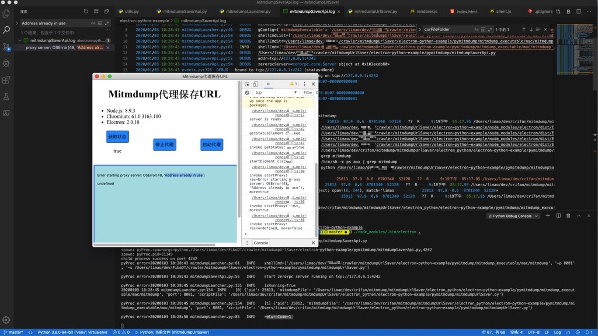
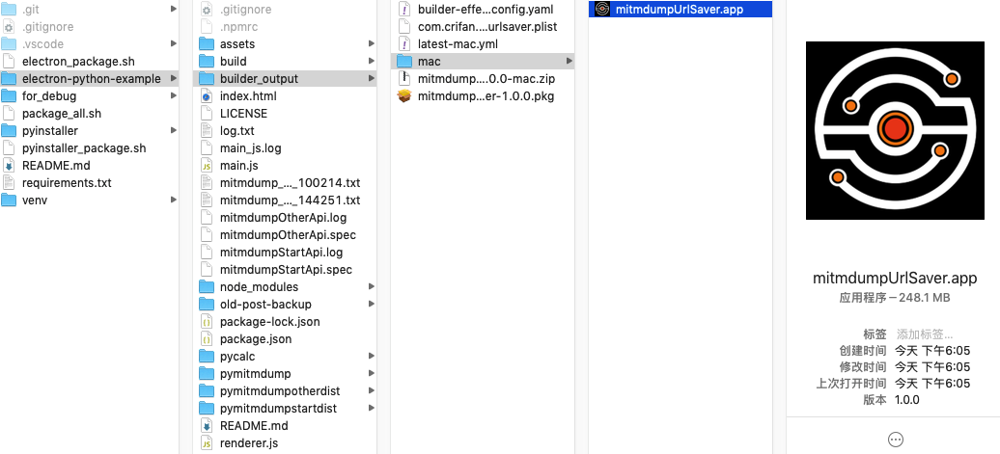
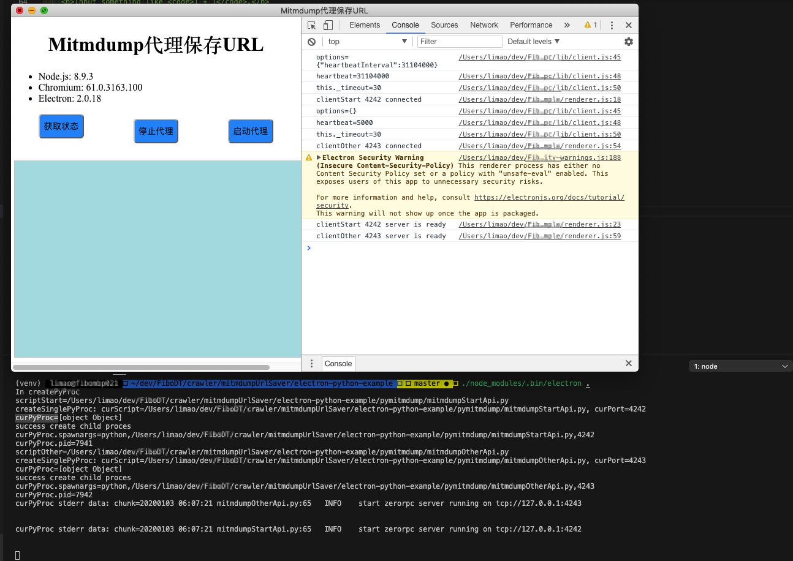
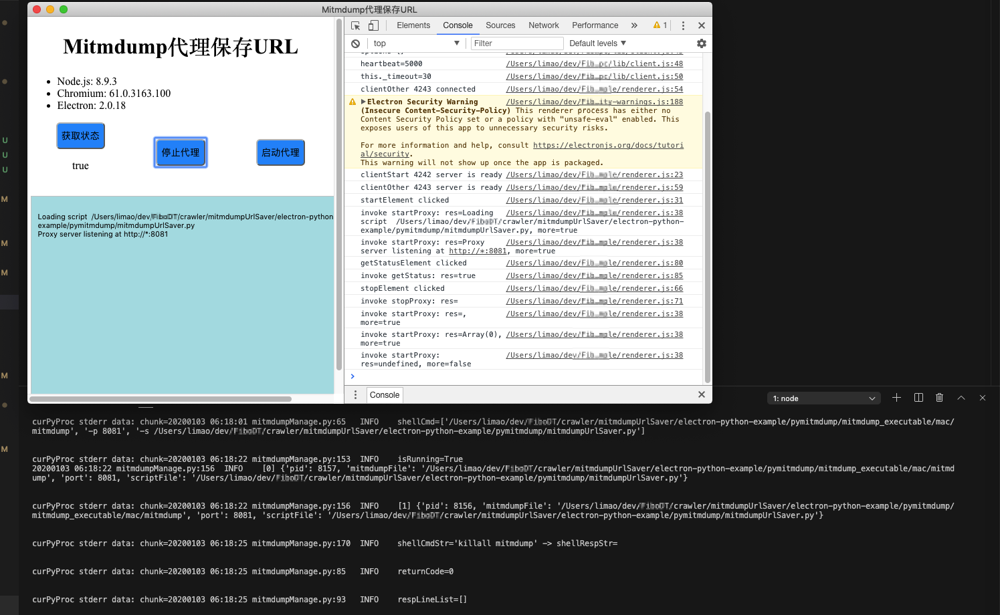
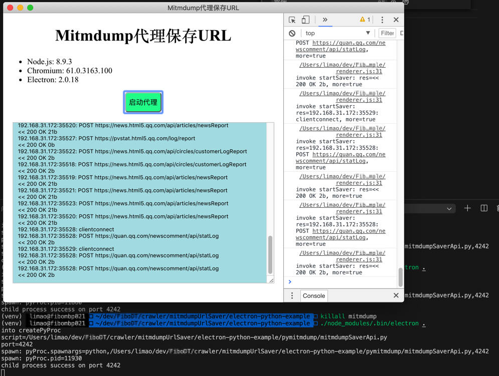
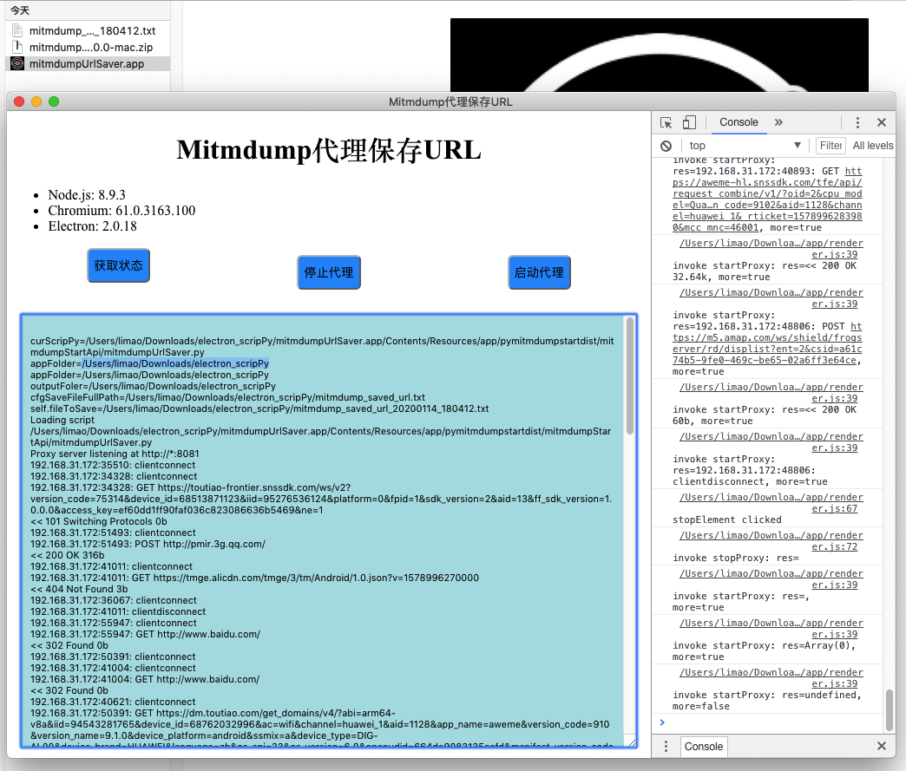
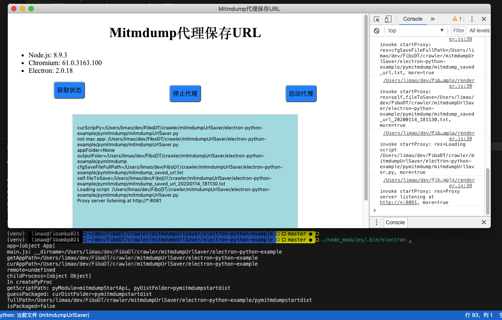

electron-python-example
在参考electron-python-example给Electron添加Python支持期间，遇到很多问题。整理如下：
npm install时zeromq会报错
- 解决办法：把node从
13.5.0换成8.x的版本，比如此处的
brew install node@8
安装出来后的版本是：8.17.0
详见：
【已解决】mac中npm install报错：make Release/obj.target/zmq/binding.o Error 1
能看到electron界面，但是输入计算表达式后，却看不到输出结果
- 原因：可能有多种
- 思路：通过electron的默认打开的console的log输出的错误信息中去找原因
- 如果找不到合适错误原因，则可以尝试去给python的进程加上stdout和stderr
electron-python-example/main.js
const createPyProc = () => {
let script = getScriptPath()
let port = '' + selectPort()
if (guessPackaged()) {
pyProc = require('child_process').execFile(script, [port])
} else {
pyProc = require('child_process').spawn('python', [script, port])
}
if (pyProc != null) {
console.log('child process success on port ' + port)
pyProc.stdout.on('data',function(data){
var textChunk = data.toString('utf8') // buffer to string
console.log("textChunk=%s", textChunk)
})
pyProc.stderr.on('data', function(data){
console.log("pyProc error=%s", data)
});
}
}
用于查看到输出的普通信息和错误信息，以便于找到错误现象和原因
详见：
【已解决】electron-python-example运行后输入计算内容但是不显示结果
Uncaught ReferenceError process is not defined
解决办法：加上参数配置nodeIntegration: true
electron-python-example/main.js
const createWindow = () => {
mainWindow = new BrowserWindow(
{
width: 800,
height: 600,
webPreferences: {
nodeIntegration: true,
}
}
)
详见：
【已解决】electron-python-example运行出错：Uncaught ReferenceError process is not defined
renderer.js Error Lost remote after 10000ms
- 原因：python的zerorpc没有安装，或者安装了zerorpc但是python进程没有正常启动
- 解决办法：确保已安装zerorpc，且的确启动了对应进程
注：此处在虚拟环境virtualenv中
pip install zerorpc
然后确保
electron-python-example/main.js
pyProc = require('child_process').spawn('python', [script, port])
正常启动了。
此处有2种确认方式：
- 方式1：系统中查看是否有对应python进程
ps aux | grep 61737
其中的61737是python进程PID
是通过js中加了调试代码
console.log('spawn: pyProc=%s', pyProc)
后，启动
./node_modules/.bin/electron .
时，看到console的log中的
spawnfile: 'python',
_handle:
Process {
owner: [Circular],
onexit: { [Function] [length]: 2, [name]: '' },
pid: 61737
有对应python的pid的.。
如果有进程，说明python进程没问题，否则说明进程没正常启动。
- 方式2： 加上
stdout、stderr等监听
if (pyProc != null) {
//console.log(pyProc)
console.log('child process success on port ' + port)
pyProc.stdout.on('data',function(data){
var textChunk = data.toString('utf8') // buffer to string
console.log("textChunk=%s", textChunk)
})
pyProc.stderr.on('data', function(data){
console.log("pyProc error=%s", data)
});
}
确认没有error等异常错误信息
此处自己就是看到有
pyProc error=Traceback (most recent call last):
File "/xxx/electron_python/electron-python-example/pycalc/api.py", line 4, in <module>
import zerorpc
ModuleNotFoundError: No module named 'zerorpc'
从而发现：
是没有进入virtualenv的venv中，导致没有找到zerorpc
该确保进入虚拟环境：
source venv/bin/activate
即可找到zerorpc，正常启动python进程了。
zerorpc.exceptions.LostRemote: Lost remote after 10s heartbeat
- 问题：electron的python，用了stream后，运行了10秒后，报错：
- js中：
invoke startSaver: error=Error: Lost remote after 10000ms - python中：
zerorpc.exceptions.LostRemote: Lost remote after 10s heartbeat
- js中：
- 原因：js和python端，底层都有heartbeat心跳机制，每隔一段时间，都要检测是否服务还有效alive，否则就报错。
而此处我的情况特殊：
js端，通过zerorpc通讯到python端
但是python端是while True的无限循环，除非进程被干掉，否则不返回
所以肯定无法满足heartbeat的10秒之内返回的要求
- 解决办法：故意设置一个足够大的心跳时间
文件：electron-python-example/renderer.js
把：
let client = new zerorpc.Client()
改为：
const constLargeEnoughHeartbeat = 60 * 60 * 24 * 30 * 12
clientOptions = {
"heartbeatInterval": constLargeEnoughHeartbeat,
}
let client = new zerorpc.Client(clientOptions)
以此规避此问题。
Uncaught Error The module zeromq zmq.node was compiled against a different Node.js version
- 问题：Electron运行
报错：./node_modules/.bin/electron .Uncaught Error: The module node_modules/zeromq/build/Release/zmq.node was compiled against a different Node.js version using NODE_MODULE_VERSION 57. This version of Node.js requires NODE_MODULE_VERSION 75. Please try re-compiling or re-installing the module (for instance, using `npm rebuild` or `npm install`). - 原因：此处安装的zeromq的库是针对于
NODE_MODULE_VERSION 57 = Node.js Node.js 8.x
编译出来的，而当前用的node版本是：
NODE_MODULE_VERSION 75 = Node.js Node.js 12.7.0
所以不匹配，没法使用。
解决办法：去重新编译出对应的匹配的
zeromq库即可：注意事项和准备工作：
需要说明的是，此处当时node版本，已经是为了解决
npm install
期间 zerorpc出错，而去降低了node版本，从之前的 node: 13.5.0降低到了：node：8.17.0
且对于node和electron本身，不同版本之间是有依赖关系的，所以此处node 8.17.0，只能用electron 2.0.18
所以此处配置是：
文件：electron_python/electron-python-example/package.json
"devDependencies": {
"electron": "^2.0.18",
文件：electron_python/electron-python-example/.npmrc
npm_config_target="2.0.18" # electron version
- 解决步骤
安装electron-rebuild：
npm install --save-dev electron-rebuild
重新去rebuild：
./node_modules/.bin/electron-rebuild
即可。
注：
编译之前，需要安装cmake
brew install cmake
详见：
【已解决】Electron报错：Uncaught Error The module zeromq zmq.node was compiled against a different Node.js version
优化：被调用python代码的print为输出日志到log文件
- 背景：希望被调用的python代码的print的日志输出改为输出到log日志文件中，便于后期调试查看log
- 解决办法：
文件：electron-python-example/pymitmdump/mitmdumpSaverApi.py
from utils import loggingInit
logFilename = "mitmdumpSaverApi.log"
loggingInit(logFilename)
# from __future__ import print_function
from mitmdumpLauncher import startMitmdumpSaver, getMitmdumpStatus
import sys
import os
import zerorpc
import logging
...
def main():
logging.debug(__file__)
addr = 'tcp://127.0.0.1:' + parse_port()
相关的logging的初始化：
文件：electron-python-example/pymitmdump/utils.py
# _*_ coding: utf-8 _*_
# Function: Crifan's utils functions, copy from https://github.com/crifan/crifanLibPython
# Update: 20200103
# Author: Crifan Li
import os
import sys
from datetime import datetime, timedelta
import logging
# print("sys.executable=%s" % sys.executable)
# sys.executable=/Users/limao/dev/xxx/crawler/mitmdumpUrlSaver/venv/bin/python3.8
...
CURRENT_LIB_FILENAME = "crifanLogging"
LOG_FORMAT_FILE = "%(asctime)s %(filename)s:%(lineno)-4d %(levelname)-7s %(message)s"
LOG_LEVEL_FILE = logging.DEBUG
LOG_FORMAT_CONSOLE = "%(asctime)s %(filename)s:%(lineno)-4d %(levelname)-7s %(message)s"
LOG_LEVEL_CONSOLE = logging.INFO
def loggingInit(filename = None,
fileLogLevel = LOG_LEVEL_FILE,
fileLogFormat = LOG_FORMAT_FILE,
fileLogDateFormat = '%Y/%m/%d %I:%M:%S',
enableConsole = True,
consoleLogLevel = LOG_LEVEL_CONSOLE,
consoleLogFormat = LOG_FORMAT_CONSOLE,
consoleLogDateFormat = '%Y%m%d %I:%M:%S',
):
"""
init logging for both log to file and console
:param logFilename: input log file name
if not passed, use current lib filename
:return: none
"""
logFilename = ""
if filename:
logFilename = filename
else:
# logFilename = __file__ + ".log"
# '/Users/crifan/dev/dev_root/xxx/crifanLogging.py.log'
logFilename = CURRENT_LIB_FILENAME + ".log"
# logging.basicConfig(
# level = fileLogLevel,
# format = fileLogFormat,
# datefmt = fileLogDateFormat,
# filename = logFilename,
# encoding = "utf-8",
# filemode = 'w')
# rootLogger = logging.getLogger()
rootLogger = logging.getLogger("")
rootLogger.setLevel(fileLogLevel)
fileHandler = logging.FileHandler(
filename=logFilename,
mode='w',
encoding="utf-8")
fileHandler.setLevel(fileLogLevel)
fileFormatter = logging.Formatter(
fmt=fileLogFormat,
datefmt=fileLogDateFormat
)
fileHandler.setFormatter(fileFormatter)
rootLogger.addHandler(fileHandler)
if enableConsole :
# define a Handler which writes INFO messages or higher to the sys.stderr
console = logging.StreamHandler()
console.setLevel(consoleLogLevel)
# set a format which is simpler for console use
formatter = logging.Formatter(
fmt=consoleLogFormat,
datefmt=consoleLogDateFormat)
# tell the handler to use this format
console.setFormatter(formatter)
rootLogger.addHandler(console)
。。。
被调用的python
文件：electron-python-example/pymitmdump/mitmdumpLauncher.py
...
import subprocess
import os
import re
import logging
from utils import osIsMacOS, osIsWinows
...
curFileFolder = os.path.dirname(__file__)
logging.debug("curFileFolder=%s", curFileFolder) # curFileFolder=/Users/limao/dev/crifan/mitmdump/mitmdumpUrlSaver/pyinstaller
...
即可正常输出log日志到文件中了：

获取Mac中electron-builder打包出的app通过双击启动时app文件所在的文件夹路径
- 背景：Mac中带Python的Electron打包后是app文件，双击app运行，希望在运行期间获取app所在目录
文件：electron-python-example/pymitmdump/mitmdumpStartApi.py
import os
import sys
import logging
from utils import getFilenameNoPointSuffix, loggingInit
sysMeipass = None
sysArgv0 = sys.argv[0]
hasMeipass = hasattr(sys, '_MEIPASS')
isBundled = hasMeipass
if isBundled:
# /xxx/pymitmdumpstartdist/mitmdumpStartApi/mitmdumpStartApi -> mitmdumpStartApi
logFilenameNoSuffix = sysArgv0.split(os.path.sep)[-1]
logFilename = "%s.log" % logFilenameNoSuffix
sysMeipass = sys._MEIPASS
logPath = sysMeipass
else:
logFilename = "%s.log" % getFilenameNoPointSuffix(__file__)
logPath = os.path.dirname(__file__)
logFullPath = os.path.join(logPath, logFilename)
# logFullPath = "/Users/limao/Downloads/electron_app/mitmdumpStartApi.log"
loggingInit(logFullPath)
logging.debug("sysArgv0=%s", sysArgv0)
logging.debug("hasMeipass=%s", hasMeipass)
logging.debug("sysMeipass=%s", sysMeipass)
logging.debug("logFilename=%s", logFilename)
logging.debug("logPath=%s", logPath)
logging.debug("logFullPath=%s", logFullPath)
sysExecutable = sys.executable
logging.debug("sysExecutable=%s", sysExecutable)
sysArgv = sys.argv
logging.debug("sysArgv=%s", sysArgv)
hasFrozen = hasattr(sys, 'frozen')
logging.debug("hasFrozen=%s", hasFrozen)
if hasFrozen:
sysForzen = sys.frozen
logging.debug("sysForzen=%s", sysForzen)
logging.debug("os.getcwd=%s", os.getcwd())
logging.debug("os.curdir=%s", os.curdir)
logging.debug("__file__=%s", __file__)
logging.debug("__name__=%s", __name__)
可以获取到对应路径：
- 打包后：bundle的=
是二进制的路径
(PyInstaller)打包后的（且后来再用electron-builder打包在一起的，所生成的）app文件，双击运行后对应输出是：
2020/01/13 06:05:51 mitmdumpStartApi.py:23 DEBUG sysArgv0=/Users/limao/dev/xxx/crawler/mitmdumpUrlSaver/electron-python-example/builder_output/mac/mitmdumpUrlSaver.app/Contents/Resources/app/pymitmdumpstartdist/mitmdumpStartApi/mitmdumpStartApi
2020/01/13 06:05:51 mitmdumpStartApi.py:24 DEBUG hasMeipass=True
2020/01/13 06:05:51 mitmdumpStartApi.py:25 DEBUG sysMeipass=/Users/limao/dev/xxx/crawler/mitmdumpUrlSaver/electron-python-example/builder_output/mac/mitmdumpUrlSaver.app/Contents/Resources/app/pymitmdumpstartdist/mitmdumpStartApi
2020/01/13 06:05:51 mitmdumpStartApi.py:27 DEBUG logFilename=mitmdumpStartApi.log
2020/01/13 06:05:51 mitmdumpStartApi.py:28 DEBUG logPath=/Users/limao/dev/xxx/crawler/mitmdumpUrlSaver/electron-python-example/builder_output/mac/mitmdumpUrlSaver.app/Contents/Resources/app/pymitmdumpstartdist/mitmdumpStartApi
2020/01/13 06:05:51 mitmdumpStartApi.py:29 DEBUG logFullPath=/Users/limao/dev/xxx/crawler/mitmdumpUrlSaver/electron-python-example/builder_output/mac/mitmdumpUrlSaver.app/Contents/Resources/app/pymitmdumpstartdist/mitmdumpStartApi/mitmdumpStartApi.log
2020/01/13 06:05:51 mitmdumpStartApi.py:32 DEBUG sysExecutable=/Users/limao/dev/xxx/crawler/mitmdumpUrlSaver/electron-python-example/builder_output/mac/mitmdumpUrlSaver.app/Contents/Resources/app/pymitmdumpstartdist/mitmdumpStartApi/mitmdumpStartApi
2020/01/13 06:05:51 mitmdumpStartApi.py:34 DEBUG sysArgv=['/Users/limao/dev/xxx/crawler/mitmdumpUrlSaver/electron-python-example/builder_output/mac/mitmdumpUrlSaver.app/Contents/Resources/app/pymitmdumpstartdist/mitmdumpStartApi/mitmdumpStartApi', '4242']
2020/01/13 06:05:51 mitmdumpStartApi.py:36 DEBUG hasFrozen=True
2020/01/13 06:05:51 mitmdumpStartApi.py:39 DEBUG sysForzen=True
2020/01/13 06:05:51 mitmdumpStartApi.py:41 DEBUG os.getcwd=/
2020/01/13 06:05:51 mitmdumpStartApi.py:42 DEBUG os.curdir=.
2020/01/13 06:05:51 mitmdumpStartApi.py:43 DEBUG __file__=mitmdumpStartApi.py
2020/01/13 06:05:51 mitmdumpStartApi.py:44 DEBUG __name__=__main__
2020/01/13 06:05:51 mitmdumpStartApi.py:101 DEBUG mitmdumpStartApi.py
。。。
其中此处app本身所在位置是：

输出的路径是：
sysArgv0：/Users/limao/dev/xxx/crawler/mitmdumpUrlSaver/electron-python-example/builder_output/mac/mitmdumpUrlSaver.app/Contents/Resources/app/pymitmdumpstartdist/mitmdumpStartApi/mitmdumpStartApi
logPath：/Users/limao/dev/xxx/crawler/mitmdumpUrlSaver/electron-python-example/builder_output/mac/mitmdumpUrlSaver.app/Contents/Resources/app/pymitmdumpstartdist/mitmdumpStartApi- 其实也就是
sysMeipass的值
- 其实也就是
没打包之前：是源码=是xxx.py=此处是
mitmdumpStartApi.py的路径
注意：此处先要删除2个dist目录（pymitmdumpstartdist和pymitmdumpotherdist）
运行
./node_modules/.bin/electron .
输出：
2020/01/13 06:13:55 mitmdumpStartApi.py:23 DEBUG sysArgv0=/Users/limao/dev/xxx/crawler/mitmdumpUrlSaver/electron-python-example/pymitmdump/mitmdumpStartApi.py
2020/01/13 06:13:55 mitmdumpStartApi.py:24 DEBUG hasMeipass=False
2020/01/13 06:13:55 mitmdumpStartApi.py:25 DEBUG sysMeipass=None
2020/01/13 06:13:55 mitmdumpStartApi.py:27 DEBUG logFilename=mitmdumpStartApi.log
2020/01/13 06:13:55 mitmdumpStartApi.py:28 DEBUG logPath=/Users/limao/dev/xxx/crawler/mitmdumpUrlSaver/electron-python-example/pymitmdump
2020/01/13 06:13:55 mitmdumpStartApi.py:29 DEBUG logFullPath=/Users/limao/dev/xxx/crawler/mitmdumpUrlSaver/electron-python-example/pymitmdump/mitmdumpStartApi.log
2020/01/13 06:13:55 mitmdumpStartApi.py:32 DEBUG sysExecutable=/Users/limao/dev/xxx/crawler/mitmdumpUrlSaver/venv/bin/python
2020/01/13 06:13:55 mitmdumpStartApi.py:34 DEBUG sysArgv=['/Users/limao/dev/xxx/crawler/mitmdumpUrlSaver/electron-python-example/pymitmdump/mitmdumpStartApi.py', '4242']
2020/01/13 06:13:55 mitmdumpStartApi.py:36 DEBUG hasFrozen=False
2020/01/13 06:13:55 mitmdumpStartApi.py:41 DEBUG os.getcwd=/Users/limao/dev/xxx/crawler/mitmdumpUrlSaver/electron-python-example
2020/01/13 06:13:55 mitmdumpStartApi.py:42 DEBUG os.curdir=.
2020/01/13 06:13:55 mitmdumpStartApi.py:43 DEBUG __file__=/Users/limao/dev/xxx/crawler/mitmdumpUrlSaver/electron-python-example/pymitmdump/mitmdumpStartApi.py
2020/01/13 06:13:55 mitmdumpStartApi.py:44 DEBUG __name__=__main__
2020/01/13 06:13:55 mitmdumpStartApi.py:101 DEBUG /Users/limao/dev/xxx/crawler/mitmdumpUrlSaver/electron-python-example/pymitmdump/mitmdumpStartApi.py
。。。
可见：sys没有frozen，也没有_MEIPASS值。
打包electron-python的单个主文件报错：OSError Python library not found libpython3.8m.dylib
- 问题：mac中用PyInstaller打包python报错
OSError Python library not found libpython3.8m.dylib - 原因：此处PyInstaller打包需要动态库，类似于
libpython3.8m.dylib，而默认安装的python是静态库/Users/limao/.pyenv/versions/3.8.0/lib/libpython3.8.a - 解决办法：重新安装带动态库的python 3.8
- 具体步骤：加上参数重新编译：
最好先去删除之前旧的python：
pyenv uninstall 3.8.0
rm -rf /Users/limao/.pyenv/versions/3.8.0/
然后再去重新安装：
env PYTHON_CONFIGURE_OPTS="--enable-framework" pyenv install 3.8.0
即可正常使用PyInstaller。
其他说明：
（1）此处安装后对应的动态库是
limao@xxx ~ ll /Users/limao/.pyenv/versions/3.8.0/Python.framework/Versions/3.8/lib
total 0
lrwxr-xr-x 1 limao CORP\Domain Users 9B 1 6 10:34 libpython3.8.dylib -> ../Python
软链接对应的文件是：3.4MB的Python
~ ll /Users/limao/.pyenv/versions/3.8.0/Python.framework/Versions/3.8/Python
-rwxr-xr-x 1 limao CORP\Domain Users 3.4M 1 6 10:34 /Users/limao/.pyenv/versions/3.8.0/Python.framework/Versions/3.8/Python
（2）此处安装后，还需要安装项目所依赖的一些库
比如：
pip install virtualenv
virtualenv venv
source venv/bin/activate
pip install zerorpc
zerorpc的stream持续输出无返回导致后续函数stopProxy无法调用
- 问题：mitmdumpSaverApi.py中调用启动代理后，代理没有输出。
- 原因：由于启动代理，内部逻辑是，没有立刻返回，而是通过stream持续返回输出，导致进程被占用，所以stopProxy都没有被执行到
- 解决办法：新增一个进程，额外单独的去处理关闭代理（以及获取代理状态）
- 具体步骤：
js中createPyProc创建了2个线程：
文件：electron-python-example/main.js
const electron = require('electron')
const app = electron.app
const BrowserWindow = electron.BrowserWindow
const path = require('path')
/*************************************************************
* py process
*************************************************************/
// const PY_DIST_FOLDER = 'pycalcdist'
const PY_DIST_FOLDER = 'pymitmdumpdist'
// const PY_FOLDER = 'pycalc'
// const PY_MODULE = 'api' // without .py suffix
const PY_FOLDER = 'pymitmdump'
// const PY_MODULE = 'mitmdumpSaverApi' // without .py suffix
const PY_MODULE_START = 'mitmdumpStartApi' // without .py suffix
const PY_MODULE_OTHER = 'mitmdumpOtherApi' // without .py suffix
PORT_START = 4242
PORT_OTHER = 4243
// let pyProc = null
let pyProcStart = null
let pyProcOther = null
// let pyPort = null
const guessPackaged = () => {
// console.log("guessPackaged")
const fullPath = path.join(__dirname, PY_DIST_FOLDER)
// console.log("fullPath=%s", fullPath)
isPackaged = require('fs').existsSync(fullPath)
// console.log("isPackaged=%s", isPackaged)
return isPackaged
}
// const getScriptPath = () => {
// if (!guessPackaged()) {
// return path.join(__dirname, PY_FOLDER, PY_MODULE + '.py')
// }
// if (process.platform === 'win32') {
// return path.join(__dirname, PY_DIST_FOLDER, PY_MODULE, PY_MODULE + '.exe')
// }
// return path.join(__dirname, PY_DIST_FOLDER, PY_MODULE, PY_MODULE)
// }
const getScriptPath = (pyModule) => {
if (!guessPackaged()) {
return path.join(__dirname, PY_FOLDER, pyModule + '.py')
}
if (process.platform === 'win32') {
return path.join(__dirname, PY_DIST_FOLDER, pyModule, pyModule + '.exe')
}
return path.join(__dirname, PY_DIST_FOLDER, pyModule, pyModule)
}
const getScriptPathStart = () => {
return getScriptPath(PY_MODULE_START)
}
const getScriptPathOther = () => {
return getScriptPath(PY_MODULE_OTHER)
}
// const selectPort = () => {
// pyPort = 4242
// return pyPort
// }
const createSinglePyProc = (curScript, curPort) => {
console.log('createSinglePyProc: curScript=%s, curPort=%s', curScript, curPort)
let curPyProc = null
if (guessPackaged()) {
// curPyProc = require('child_process').execFile(curScript)
curPyProc = require('child_process').execFile(curScript, [curPort])
} else {
// curPyProc = require('child_process').spawn('python', [curScript])
curPyProc = require('child_process').spawn('python', [curScript, curPort])
}
console.log('curPyProc=%s', curPyProc)
if (curPyProc != null) {
console.log("success create child proces")
// console.log('curPyProc=%o', curPyProc)
console.log('curPyProc.spawnargs=%s', curPyProc.spawnargs)
console.log('curPyProc.pid=%s', curPyProc.pid)
curPyProc.stdout.on('data',function(chunk){
var chunkUtf8Str = chunk.toString('utf8') // buffer to string
console.log("curPyProc stdout data: chunkUtf8Str=%s", chunkUtf8Str)
})
curPyProc.stderr.on('data', function(chunk){
console.error("curPyProc stderr data: chunk=%s\r\n", chunk)
})
curPyProc.on('close', function(closeCode){
console.log("curPyProc close: closeCode=%s\r\n", closeCode)
})
// for Windows:
curPyProc.on('exit', function(exitCode){
console.log("curPyProc exit: exitCode=%s\r\nn", exitCode)
})
}
return curPyProc
}
const createPyProc = () => {
console.log('In createPyProc')
// let script = getScriptPath()
// console.log('script=%s', script)
// let port = '' + selectPort()
// console.log('port=%s', port)
let scriptStart = getScriptPathStart()
console.log('scriptStart=%s', scriptStart)
pyProcStart = createSinglePyProc(scriptStart, PORT_START)
let scriptOther = getScriptPathOther()
console.log('scriptOther=%s', scriptOther)
pyProcOther = createSinglePyProc(scriptOther, PORT_OTHER)
}
const exitPyProc = () => {
// pyProc.kill()
// pyProc = null
console.log('exitPyProc')
if (pyProcStart != null) {
pyProcStart.kill()
pyProcStart = null
}
if (pyProcOther != null) {
pyProcOther.kill()
pyProcOther = null
}
// pyPort = null
}
app.on('ready', createPyProc)
app.on('will-quit', exitPyProc)
...
文件：electron-python-example/renderer.js
const zerorpc = require("zerorpc")
// let client = new zerorpc.Client()
PORT_START = 4242
PORT_OTHER = 4243
/****************************************
* Client Start Server
****************************************/
const constLargeEnoughHeartbeat = 60 * 60 * 24 * 30 * 12 // 1 Year
clientOptions = {
"heartbeatInterval": constLargeEnoughHeartbeat,
}
let clientStart = new zerorpc.Client(clientOptions)
clientStart.connect(`tcp://127.0.0.1:${PORT_START}`)
console.log(`clientStart ${PORT_START} connected`)
clientStart.invoke("echo", "server ready", (error, res) => {
if(error || res !== 'server ready') {
console.error(error)
} else {
console.log("clientStart %d server is ready", PORT_START)
}
})
let startElement = document.querySelector('#startProxy')
let outputElement = document.querySelector('#output')
startElement.addEventListener('click', () => {
console.log("startElement clicked")
outputElement.textContent = "" // clear before start
clientStart.invoke("startProxy", (error, res, more) => {
if(error) {
console.error("invoke startProxy: error=%s, more=%s", error, more)
} else {
console.log("invoke startProxy: res=%s, more=%s", res, more)
if (res != undefined) {
outputElement.textContent += "\n" + res
// outputElement.textContent += res
}
outputElement.scrollTop = outputElement.scrollHeight
}
})
})
/****************************************
* Client Other Server
****************************************/
let clientOther = new zerorpc.Client()
clientOther.connect(`tcp://127.0.0.1:${PORT_OTHER}`)
console.log(`clientOther ${PORT_OTHER} connected`)
clientOther.invoke("echo", "server ready", (error, res) => {
if(error || res !== 'server ready') {
console.error(error)
} else {
console.log("clientOther %d server is ready", PORT_OTHER)
}
})
let stopElement = document.querySelector('#stopProxy')
stopElement.addEventListener('click', () => {
console.log("stopElement clicked")
clientOther.invoke("stopProxy", (error, res) => {
if(error) {
console.error("invoke stopProxy: error=%s", error)
} else {
console.log("invoke stopProxy: res=%s", res)
}
})
})
let getStatusElement = document.querySelector('#getStatus')
let statusElement = document.querySelector('#serverStatus')
getStatusElement.addEventListener('click', () => {
console.log("getStatusElement clicked")
clientOther.invoke("getStatus", (error, res) => {
if(error) {
console.error("invoke getStatus: error=%s", error)
} else {
console.log("invoke getStatus: res=%s", res)
statusElement.textContent = res
}
})
})
分别调用的python脚本文件是：
文件：electron-python-example/pymitmdump/mitmdumpStartApi.py
from utils import getFilenameNoPointSuffix, loggingInit
loggingInit("%s.log" % getFilenameNoPointSuffix(__file__))
from mitmdumpManage import startMitmdumpSaver
import sys
import zerorpc
import logging
class MitmdumpStartApi(object):
def echo(self, text):
"""Echo any text from zerorpc client"""
logging.debug("text=%s", text)
return text
@zerorpc.stream
def startProxy(self):
"""Start mitmdump proxy"""
logging.debug("startProxy")
startResp = startMitmdumpSaver()
logging.debug("startResp=%s", startResp)
return startResp
def parse_port():
port = 4242
try:
port = int(sys.argv[1])
except Exception as e:
pass
curPortStr = '{}'.format(port)
return curPortStr
def main():
logging.debug(__file__)
addr = 'tcp://127.0.0.1:' + parse_port()
logging.debug("addr=%s", addr)
zerorpcServer = zerorpc.Server(MitmdumpStartApi())
logging.debug("zerorpcServer=%s", zerorpcServer)
zerorpcServer.bind(addr)
logging.info('start zerorpc server running on %s', addr)
zerorpcServer.run()
if __name__ == '__main__':
main()
和：
文件：electron-python-example/pymitmdump/mitmdumpOtherApi.py
from utils import getFilenameNoPointSuffix, loggingInit
loggingInit("%s.log" % getFilenameNoPointSuffix(__file__))
from mitmdumpManage import getMitmdumpStatus, stopMitmdump
import sys
import zerorpc
import logging
class MitmdumpOtherApi(object):
def echo(self, text):
"""Echo any text from zerorpc client"""
logging.debug("text=%s", text)
return text
def getStatus(self):
"""Get mitmdump server status"""
logging.debug("getStatus")
isRunning, processList = getMitmdumpStatus()
logging.debug("isRunning=%s, processList=%s", isRunning, processList)
return isRunning
# return isRunning, processList
def stopProxy(self):
"""Stop mitmdump proxy"""
logging.debug("stopProxy")
stopResp = stopMitmdump()
logging.debug("stopResp=%s", stopResp)
return stopResp
def parse_port():
port = 4242
try:
port = int(sys.argv[1])
except Exception as e:
pass
curPortStr = '{}'.format(port)
return curPortStr
def main():
logging.debug(__file__)
addr = 'tcp://127.0.0.1:' + parse_port()
logging.debug("addr=%s", addr)
zerorpcServer = zerorpc.Server(MitmdumpOtherApi())
logging.debug("zerorpcServer=%s", zerorpcServer)
zerorpcServer.bind(addr)
logging.info('start zerorpc server running on %s', addr)
zerorpcServer.run()
if __name__ == '__main__':
main()
其中都调用了最底层实现逻辑的代码：
文件：electron-python-example/pymitmdump/mitmdumpManage.py
# _*_ coding: utf-8 _*_
# Function: Launch mitmdump to start script service to proxy to save url
# Update: 20191231
# Author: Crifan Li
import subprocess
import os
import re
import logging
from utils import osIsMacOS, osIsWinows
def startMitmdumpSaver():
"""Start mitmdump saver"""
logging.debug("startMitmdumpSaver")
isUseShell = False
# isUseShell = True
curFileFolder = os.path.dirname(__file__)
logging.debug("curFileFolder=%s", curFileFolder) # curFileFolder=/Users/limao/dev/crifan/mitmdump/mitmdumpUrlSaver/pyinstaller
Mitmdump_Mac = "mitmdump_executable/mac/mitmdump"
Mitmdump_Win = "mitmdump_executable/win/mitmdump.exe"
mitmdumpExecutablePath = None
if osIsMacOS():
mitmdumpExecutablePath = Mitmdump_Mac
elif osIsWinows():
mitmdumpExecutablePath = Mitmdump_Win
logging.debug("mitmdumpExecutablePath=%s", mitmdumpExecutablePath) # mitmdumpExecutablePath=mitmdump_executable/mac/mitmdump
mitmdumpExecutableFullPath = os.path.join(curFileFolder, mitmdumpExecutablePath)
logging.debug("mitmdumpExecutableFullPath=%s", mitmdumpExecutableFullPath) # mitmdumpExecutableFullPath=/Users/limao/dev/crifan/mitmdump/mitmdumpUrlSaver/pyinstaller/mitmdump_executable/mac/mitmdump
# mitmdumpExecutable = "mitmdump"
# mitmdumpExecutable = "pyinstaller/mitmdump_executable/mac/mitmdump"
mitmdumpExecutable = mitmdumpExecutableFullPath
logging.debug("mitmdumpExecutable=%s", mitmdumpExecutable) # mitmdumpExecutable=/Users/limao/dev/crifan/mitmdump/mitmdumpUrlSaver/pyinstaller/mitmdump_executable/mac/mitmdump
mitmdumpScriptFilename = "mitmdumpUrlSaver.py"
logging.debug("mitmdumpScriptFilename=%s", mitmdumpScriptFilename)
mitmdumpScriptFullPath = os.path.join(curFileFolder, mitmdumpScriptFilename)
logging.debug("mitmdumpScriptFullPath=%s", mitmdumpScriptFullPath) # mitmdumpScriptFullPath=/Users/limao/dev/crifan/mitmdump/mitmdumpUrlSaver/pyinstaller/mitmdumpUrlSaver.py
mitmdumpScript = mitmdumpScriptFullPath
logging.debug("mitmdumpScript=%s", mitmdumpScript)
gConfig = {
"mitmdumpExecutable": mitmdumpExecutable,
"port": 8081,
"mitmdumpScript": mitmdumpScript,
}
logging.debug("gConfig=%s", gConfig)
# shellCmdList = ['ping', '-c 4', 'www.crifan.com']
shellCmdList = ['%s' % gConfig["mitmdumpExecutable"], '-p %s' % gConfig["port"], '-s %s' % gConfig["mitmdumpScript"]]
logging.debug("shellCmdList=%s", shellCmdList)
# shellCmdList=['/Users/limao/dev/crifan/mitmdump/mitmdumpUrlSaver/pyinstaller/mitmdump_executable/mac/mitmdump', '-p 8081', '-s /Users/limao/dev/crifan/mitmdump/mitmdumpUrlSaver/pyinstaller/mitmdumpUrlSaver.py']
shellCmdStr = " ".join(shellCmdList)
logging.debug("shellCmdStr=%s", shellCmdStr)
# shellCmdStr=/Users/limao/dev/crifan/mitmdump/mitmdumpUrlSaver/pyinstaller/mitmdump_executable/mac/mitmdump -p 8081 -s /Users/limao/dev/crifan/mitmdump/mitmdumpUrlSaver/pyinstaller/mitmdumpUrlSaver.py
if isUseShell:
shellCmd = shellCmdStr
else:
shellCmd = shellCmdList
logging.info("shellCmd=%s", shellCmd)
curProcess = subprocess.Popen(
shellCmd,
stdout=subprocess.PIPE,
stderr=subprocess.STDOUT,
universal_newlines=True,
shell=isUseShell,
)
logging.debug("curProcess=%s", curProcess)
while True:
curLineOutput = curProcess.stdout.readline()
curLineOutput = curLineOutput.strip()
logging.debug("curLineOutput=%s", curLineOutput)
yield curLineOutput
# Do something else
returnCode = curProcess.poll()
if returnCode is not None:
logging.info('returnCode=%s', returnCode)
# Process has finished, read rest of the output
# for eachLineOutput in curProcess.stdout.readlines():
# eachLineOutput = eachLineOutput.strip()
# logging.debug("eachLineOutput=%s", eachLineOutput)
# yield eachLineOutput
respLineList = curProcess.stdout.readlines()
logging.info('respLineList=%s', respLineList)
yield respLineList
break
def getMitmdumpStatus():
"""Get current mitmdump status"""
logging.debug("getMitmdumpStatus")
isRunning, processInfoList = False, []
if osIsMacOS():
shellCmdStr = "ps aux | grep mitmdump"
elif osIsWinows():
shellCmdStr = "tasklist | findstr mitmdump"
logging.debug("shellCmdStr=%s", shellCmdStr)
shellRespStr = subprocess.check_output(
shellCmdStr,
shell=True,
universal_newlines=True,
)
logging.debug("shellRespStr=%s", shellRespStr)
singleLineList = shellRespStr.split(os.linesep)
logging.debug("singleLineList=%s", singleLineList)
for eachLineStr in singleLineList:
# TODO: add windows support extract mitmdump from output
logging.debug("eachLineStr=%s", eachLineStr)
# mitmdumpCmdPattern = "mitmdump\s+-p\s+\d+-s\s+\S+\.py"
# mitmdumpCmdPattern = "mitmdump\s+-p\s+\d+\s+-s\s+\S+\.py"
# mitmdumpCmdPattern = "mitmdump\s+-p\s+(?P<portStr>\d+)\s+-s\s+(?P<scriptFile>\S+?\.py)"
# mitmdumpCmdPattern = "\s+(?P<mitmdumpFile>\S+mitmdump)\s+-p\s+(?P<portStr>\d+)\s+-s\s+(?P<scriptFile>\S+?\.py)"
# mitmdumpCmdPattern = "^\w+\s+(?P<pidStr>\d+).+?\s+(?P<mitmdumpFile>\S+mitmdump)\s+-p\s+(?P<portStr>\d+)\s+-s\s+(?P<scriptFile>\S+?\.py)"
mitmdumpCmdPattern = "^\w+\s+(?P<pidStr>\d+).+\s+(?P<mitmdumpFile>\S+mitmdump)\s+-p\s+(?P<portStr>\d+)\s+-s\s+(?P<scriptFile>\S+?\.py)"
# foundMitmdump = re.match(mitmdumpCmdPattern, eachLineStr, re.IGNORECASE)
foundMitmdump = re.search(mitmdumpCmdPattern, eachLineStr, re.IGNORECASE)
logging.debug("foundMitmdump=%s", foundMitmdump)
if foundMitmdump:
isRunning = True
matchedMitmdumpStr = foundMitmdump.group(0)
logging.debug("matchedMitmdumpStr=%s", matchedMitmdumpStr)
pidStr = foundMitmdump.group("pidStr")
pidInt = int(pidStr)
logging.debug("pidInt=%s", pidInt)
mitmdumpFile = foundMitmdump.group("mitmdumpFile")
logging.debug("mitmdumpFile=%s", mitmdumpFile)
portStr = foundMitmdump.group("portStr")
portInt = int(portStr)
logging.debug("portInt=%s", portInt)
scriptFile = foundMitmdump.group("scriptFile")
logging.debug("scriptFile=%s", scriptFile)
curProcessDict = {
"pid": pidInt,
"mitmdumpFile": mitmdumpFile,
"port": portInt,
"scriptFile": scriptFile,
}
logging.debug("curProcessDict=%s", curProcessDict)
processInfoList.append(curProcessDict)
# logging.info("isRunning=%s, processInfoList=%s", isRunning, processInfoList)
logging.info("isRunning=%s", isRunning)
if processInfoList:
for curIdx, eachProcess in enumerate(processInfoList):
logging.info("[%d] %s", curIdx, eachProcess)
return isRunning, processInfoList
def stopMitmdump():
"""Stop mitmdump"""
# TODO: add windows support
shellCmdStr = "killall mitmdump"
logging.debug("shellCmdStr=%s", shellCmdStr)
try:
shellRespStr = subprocess.check_output(
shellCmdStr,
shell=True,
universal_newlines=True,
)
logging.info("shellCmdStr='%s' -> shellRespStr=%s", shellCmdStr, shellRespStr)
except subprocess.CalledProcessError as procErr:
logging.error("shellCmdStr='%s' -> procErr=%s", shellCmdStr, procErr)
shellRespStr = None
return shellRespStr
if __name__ == "__main__":
from utils import loggingInit
logFilename = "mitmdumpManage.log"
loggingInit(logFilename)
# getMitmdumpStatus()
stopMitmdump()
以及，其中start部分是调用的是：
文件：electron-python-example/pymitmdump/mitmdumpUrlSaver.py
class Saver:
def request(self, flow):
...
addons = [Saver()]
正常启动后：

输出：
./node_modules/.bin/electron .
In createPyProc
scriptStart=/Users/limao/dev/xxx/crawler/mitmdumpUrlSaver/electron-python-example/pymitmdump/mitmdumpStartApi.py
createSinglePyProc: curScript=/Users/limao/dev/xxx/crawler/mitmdumpUrlSaver/electron-python-example/pymitmdump/mitmdumpStartApi.py, curPort=4242
curPyProc=[object Object]
success create child proces
curPyProc.spawnargs=python,/Users/limao/dev/xxx/crawler/mitmdumpUrlSaver/electron-python-example/pymitmdump/mitmdumpStartApi.py,4242
curPyProc.pid=7941
scriptOther=/Users/limao/dev/xxx/crawler/mitmdumpUrlSaver/electron-python-example/pymitmdump/mitmdumpOtherApi.py
createSinglePyProc: curScript=/Users/limao/dev/xxx/crawler/mitmdumpUrlSaver/electron-python-example/pymitmdump/mitmdumpOtherApi.py, curPort=4243
curPyProc=[object Object]
success create child proces
curPyProc.spawnargs=python,/Users/limao/dev/xxx/crawler/mitmdumpUrlSaver/electron-python-example/pymitmdump/mitmdumpOtherApi.py,4243
curPyProc.pid=7942
curPyProc stderr data: chunk=20200103 06:07:21 mitmdumpOtherApi.py:65 INFO start zerorpc server running on tcp://127.0.0.1:4243
curPyProc stderr data: chunk=20200103 06:07:21 mitmdumpStartApi.py:65 INFO start zerorpc server running on tcp://127.0.0.1:4242
以及两个log文件：
文件：electron-python-example/mitmdumpOtherApi.log
2020/01/03 06:07:21 mitmdumpOtherApi.py:58 DEBUG /Users/limao/dev/xxx/crawler/mitmdumpUrlSaver/electron-python-example/pymitmdump/mitmdumpOtherApi.py
2020/01/03 06:07:21 mitmdumpOtherApi.py:61 DEBUG addr=tcp://127.0.0.1:4243
2020/01/03 06:07:21 mitmdumpOtherApi.py:63 DEBUG zerorpcServer=<zerorpc.core.Server object at 0x10daad640>
2020/01/03 06:07:21 events.py:326 DEBUG bound to tcp://127.0.0.1:4243 (status=None)
2020/01/03 06:07:21 mitmdumpOtherApi.py:65 INFO start zerorpc server running on tcp://127.0.0.1:4243
2020/01/03 06:07:21 channel.py:125 DEBUG <-- new channel 31a342f2-a9a7-4181-918e-000000000001
2020/01/03 06:07:21 mitmdumpOtherApi.py:30 DEBUG text=server ready
2020/01/03 06:07:21 channel.py:139 DEBUG -x- closed channel 31a342f2-a9a7-4181-918e-000000000001
文件：electron-python-example/mitmdumpStartApi.log
2020/01/03 06:07:21 mitmdumpStartApi.py:58 DEBUG /Users/limao/dev/xxx/crawler/mitmdumpUrlSaver/electron-python-example/pymitmdump/mitmdumpStartApi.py
2020/01/03 06:07:21 mitmdumpStartApi.py:61 DEBUG addr=tcp://127.0.0.1:4242
2020/01/03 06:07:21 mitmdumpStartApi.py:63 DEBUG zerorpcServer=<zerorpc.core.Server object at 0x10d789a30>
2020/01/03 06:07:21 events.py:326 DEBUG bound to tcp://127.0.0.1:4242 (status=None)
2020/01/03 06:07:21 mitmdumpStartApi.py:65 INFO start zerorpc server running on tcp://127.0.0.1:4242
2020/01/03 06:07:21 channel.py:125 DEBUG <-- new channel 31a342f2-a9a7-4181-918e-000000000000
2020/01/03 06:07:21 mitmdumpStartApi.py:16 DEBUG text=server ready
2020/01/03 06:07:21 channel.py:139 DEBUG -x- closed channel 31a342f2-a9a7-4181-918e-000000000000
后续启动mitmdump后，再去get status或stop，可以正常调用了：

就不会被之前只有单一进程而阻塞和卡死了。
优化：js端通过zerorpc调用python代码的逻辑优化为支持返回连续输出结果
- 背景：Electron的js端通过zerorpc调用python代码，之前只能返回单次结果，现象希望支持返回连续的（mitmdump抓包）输出结果
- 解决办法：
（1）python中
文件：electron-python-example/pymitmdump/mitmdumpLauncher.py
def startMitmdumpSaver():
"""Start mitmdump saver"""
print("mitmdumpLauncher: startMitmdumpSaver")
curProcess = subprocess.Popen(
shellCmd,
stdout=subprocess.PIPE,
stderr=subprocess.STDOUT,
universal_newlines=True,
shell=isUseShell,
)
print("curProcess=%s" % curProcess)
while True:
curLineOutput = curProcess.stdout.readline()
curLineOutput = curLineOutput.strip()
# print("curLineOutput=%s" % curLineOutput)
# print(curLineOutput)
yield curLineOutput
# Do something else
returnCode = curProcess.poll()
if returnCode is not None:
print('returnCode=%s' % returnCode)
# Process has finished, read rest of the output
for eachLineOutput in curProcess.stdout.readlines():
eachLineOutput = eachLineOutput.strip()
print("eachLineOutput=%s" % eachLineOutput)
yield eachLineOutput
break
核心逻辑：通过yield输出连续内容
对应调用：
文件：electron-python-example/pymitmdump/mitmdumpSaverApi.py
from mitmdumpLauncher import startMitmdumpSaver
import zerorpc
class MitmdumpSaverApi(object):
@zerorpc.stream
def startSaver(self):
"""Start mitmdump saver to save url to file"""
print("MitmdumpSaverApi startSaver")
respValue = startMitmdumpSaver()
print("respValue=%s" % respValue)
return respValue
（2）js中
文件：electron-python-example/renderer.js
const zerorpc = require("zerorpc")
// let client = new zerorpc.Client()
const constLargeEnoughHeartbeat = 60 * 60 * 24 * 30 * 12 // 1 Year
clientOptions = {
"heartbeatInterval": constLargeEnoughHeartbeat,
}
let client = new zerorpc.Client(clientOptions)
let startElement = document.querySelector('#startSaver')
let outputElement = document.querySelector('#output')
startElement.addEventListener('click', () => {
console.log("startElement clicked")
client.invoke("startSaver", (error, res, more) => {
if(error) {
console.error("invoke startSaver: error=%s, more=%s", error, more)
} else {
console.log("invoke startSaver: res=%s, more=%s", res, more)
outputElement.textContent += "\n" + res
// outputElement.textContent += res
outputElement.scrollTop = outputElement.scrollHeight
}
})
})
效果：持续的输出mitmdump代理抓包到的url链接了

Electron打包双击app启动时python用正则处理从sys的argv中解析出app文件所在根目录路径
- 背景：对于支持Python的Electron打包后的app，希望在app启动运行期间，用Python从sys的argv中解析出app文件所在根目录路径
- 解决办法：
文件：electron-python-example/pymitmdump/mitmdumpUrlSaver.py
def extractAppFolderFromArgv(curArgvList):
"""Extract app folder from argv list
Examples:
input: ['/Users/limao/Downloads/electron_app/mitmdumpUrlSaver.app/Contents/Resources/app/pymitmdumpstartdist/mitmdumpStartApi/mitmdump_executable/mac/mitmdump', '-p 8081', '-s /Users/limao/Downloads/electron_app/mitmdumpUrlSaver.app/Contents/Resources/app/pymitmdumpstartdist/mitmdumpStartApi/mitmdumpUrlSaver.py'],
output: /Users/limao/Downloads/electron_app
"""
appFolder = None
eachArgvStr = " ".join(curArgvList)
foundScriptPy = re.search("-s\s+(?P<scriptPy>.+?\.py)", eachArgvStr, re.I)
if foundScriptPy:
curScripPy = foundScriptPy.group("scriptPy")
print("curScripPy=%s" % curScripPy)
# TODO: add windows exe support
macAppP = "[^\/]+\.app"
# macAppP = "[^\]+\.app"
# macAppP = "\\.app"
# macAppP = "\.app"
# macAppP = ".app"
# if re.match(macAppP, curScripPy, re.I):
# if re.match(macAppP, curScripPy):
# isMacApp = re.match(macAppP, curScripPy)
foundMacApp = re.search(macAppP, curScripPy)
if foundMacApp:
removeMacAppP = "/?[^/]+\.app(.+)?$"
# appPath = re.sub(removeMacAppP, "", curScripPy, flags=re.I)
appFolder = re.sub(removeMacAppP, "", curScripPy)
print("appFolder=%s" % appFolder)
else:
print("not mac app: %s" % curScripPy)
return appFolder
appFolder = extractAppFolderFromArgv(sys.argv)
print("appFolder=%s" % appFolder)
if appFolder:
outputFoler = appFolder
else:
outputFoler = os.path.dirname(__file__)
print("outputFoler=%s" % outputFoler)
打包后双击app运行，即可得到根目录：
curScripPy=/Users/limao/Downloads/electron_scripPy/mitmdumpUrlSaver.app/Contents/Resources/app/pymitmdumpstartdist/mitmdumpStartApi/mitmdumpUrlSaver.py
appFolder=/Users/limao/Downloads/electron_scripPy
appFolder=/Users/limao/Downloads/electron_scripPy
outputFoler=/Users/limao/Downloads/electron_scripPy
cfgSaveFileFullPath=/Users/limao/Downloads/electron_scripPy/mitmdump_saved_url.txt
self.fileToSave=/Users/limao/Downloads/electron_scripPy/mitmdump_saved_url_20200114_180412.txt
Loading script /Users/limao/Downloads/electron_scripPy/mitmdumpUrlSaver.app/Contents/Resources/app/pymitmdumpstartdist/mitmdumpStartApi/mitmdumpUrlSaver.py
Proxy server listening at http://*:8081

2种情况对应的输出：
（1）debug=调试时
curScripPy=/Users/limao/dev/xxx/crawler/mitmdumpUrlSaver/electron-python-example/pymitmdump/mitmdumpUrlSaver.py
not mac app: /Users/limao/dev/xxx/crawler/mitmdumpUrlSaver/electron-python-example/pymitmdump/mitmdumpUrlSaver.py
appFolder=None
outputFoler=/Users/limao/dev/xxx/crawler/mitmdumpUrlSaver/electron-python-example/pymitmdump
cfgSaveFileFullPath=/Users/limao/dev/xxx/crawler/mitmdumpUrlSaver/electron-python-example/pymitmdump/mitmdump_saved_url.txt
self.fileToSave=/Users/limao/dev/xxx/crawler/mitmdumpUrlSaver/electron-python-example/pymitmdump/mitmdump_saved_url_20200114_181130.txt
Loading script /Users/limao/dev/xxx/crawler/mitmdumpUrlSaver/electron-python-example/pymitmdump/mitmdumpUrlSaver.py
Proxy server listening at http://*:8081

（2）普通命令行中调用mitmdump时
✘ limao@xxx ~/dev/xxx/electron-python-example/pymitmdump master ● mitmdump -p 8081 -s mitmdumpUrlSaver.py
__file__=mitmdumpUrlSaver.py
curScripPy=mitmdumpUrlSaver.py
not mac app: mitmdumpUrlSaver.py
appFolder=None
outputFoler=/Users/limao/dev/xxx/crawler/mitmdumpUrlSaver/electron-python-example/pymitmdump
cfgSaveFileFullPath=/Users/limao/dev/xxx/crawler/mitmdumpUrlSaver/electron-python-example/pymitmdump/mitmdump_saved_url.txt
self.fileToSave=/Users/limao/dev/xxx/crawler/mitmdumpUrlSaver/electron-python-example/pymitmdump/mitmdump_saved_url_20200114_181553.txt
Loading script mitmdumpUrlSaver.py
Proxy server listening at http://*:8081